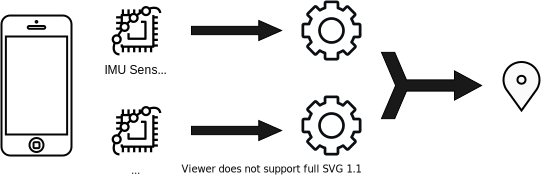
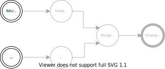
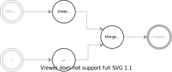
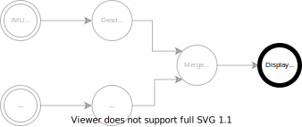
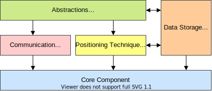
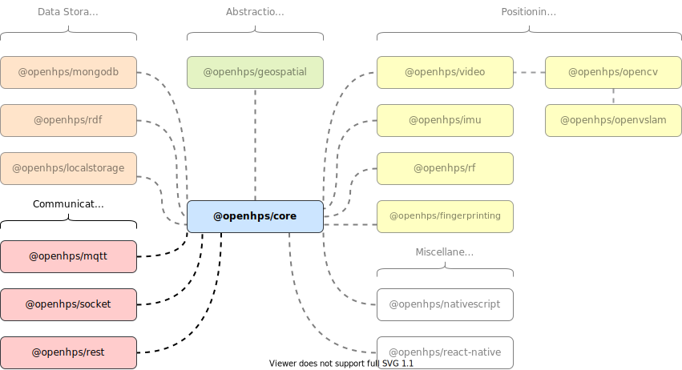
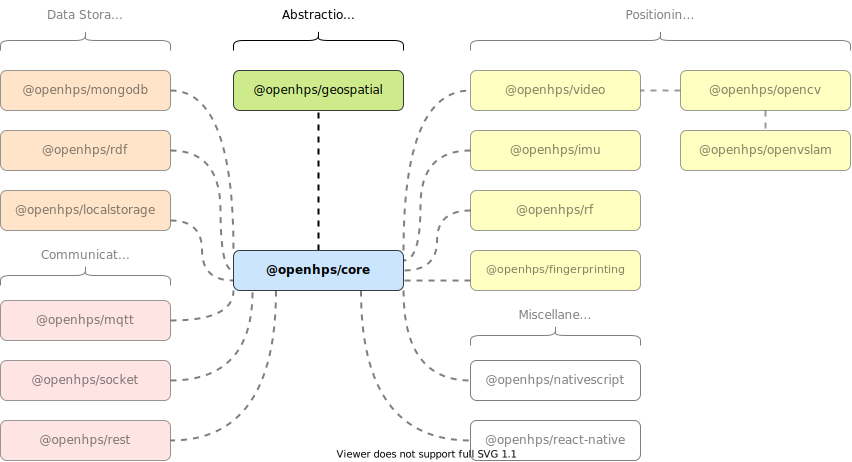
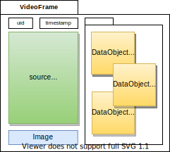

Positioning System
"A positioning system is a mechanism for determining the position of an object in space."
- Wikipedia (2022)
Positioning System
"A positioning system is a mechanism for determining the position of an object in space."
- Wikipedia (2022)
Object
What are you tracking? A person, an asset or a phone?
Space
Outdoor, indoor, under water or on a table?
Use Cases
- Navigation
Navigate a person from point A to point B - Tracking
Asset tracking, customer tracking, tracking items on a table - Location Awareness
Trigger an action whenever a specific person is in a room - Mapping
Geospatial mapping of an environment
Technologies
Technologies used to obtain sensor data for positioning
- Camera (stereoscopic, monocular, omnidirectional)
- Beacons (ultrawideband, Bluetooth, ultrasound)
- LIDAR
- Inertial measurement unit (IMU)
- Visible light communication
- ...
Algorithms
Algorithms used to process sensor data
- Lateration
- Proximity positioning
- Signal propagation
- Fingerprinting
- Computer vision
- Dead reckoning
- Sensor fusion
- ...

Open Source Solutions
- AnyPlace https://anyplace.cs.ucy.ac.cy/
- FIND https://github.com/schollz/find3
- IndoorLocation https://github.com/IndoorLocation
- Navigine https://github.com/Navigine
- RedPin http://redpin.org/
- Traccar https://github.com/traccar
- TraceMeNow https://isislab-unisa.github.io/trace-me-now
OpenHPS
An Open Source Hybrid Positioning System

OpenHPS
An Open Source Hybrid Positioning System
- Any technology
- Any algorithm
- Various use cases
- Flexible processing and output
- Prefer accuracy over battery consumption, reliability, ...
- Aimed towards developers and researchers
Process Network Design
Process Network Design ...

Process Network Design ...
Process Network Design ...
Process Network Design ...
Process Network Design ...

Modularity
Modularity ...

Modularity ...

Modularity ...
Modularity ...

Modularity ...
Data Processing

DataObject

ts
DataObject
ts
DataObject
ts
DataObject
ts
Absolute and Relative Positions
Absolute
- 2D, 3D, geographical, ...
- Within a reference space
Relative
- Distance, angle, velocity, ...
- Relative to another object
ts

DataFrame

ts
DataFrame ...
Pushing Data

DataFrame ...
Pulling Data

Positioning Model
ts
Example
Example ...
Example ...
Example ...
Example ...
Example ...
Example ...
Example ...
Example ...
ts
Example ...
ts
Example ...
ts
Example ...
ts
Example ...
ts
OpenCV: Contour Detection
ts
OpenCV: Contour Detection
ts
OpenCV: Contour Detection
ts
Contributing and Future Work
- Positioning algorithms
- Process network communication
- Bindings to other systems
- (UI) abstractions for end-user authoring
- Documentation and examples
- Calibration and set-up utilities